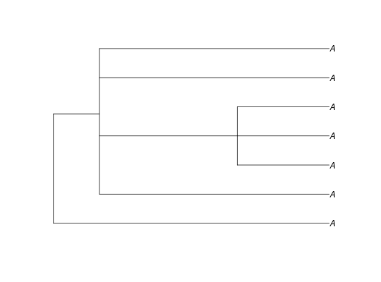

partitionsNumber computes the number of different models with a given
number of shifts K. It is also the number of colorings of the tips to the
tree in npart = K + 1 colors.
partitionsNumber(phylo, npart)
| phylo | a phylogenetic tree of class |
|---|---|
| npart | the numbers of partitions (colors) allowed at the tips. This is the number of shifts plus one (npart = K + 1). |
an object of class partitionsNumber. This is made of a matrix
with (Nnodes + ntaxa) rows and (2*npart) columns. Each column contains two vectors:
for k=1:npart it contains the number of partitions with k groups compatible
with the tree and the shift process; and for k=(npart+1):2*npart, it contains
the number of "marqued" partitions with (k-npart) groups compatible with the
tree and the shift process. The actual number can be extracted with function
extract.partitionsNumber (see examples below).
extract.partitionsNumber, parsimonyNumber,
equivalent_shifts
npart <- 8 # number of colors at the tips allowed tree <- read.tree(text="(A,(A,(A,A,A),A,A));") # a tree with polytomies plot(tree)parts_num <- partitionsNumber(tree, npart) parts_num#> #> Number of models with 7 shifts: 0. #>#> [1] 0#> [1] 1 8 28 53 53 21 1 0## Number of possible colorings of the tips in npart colors ## For the sub-tree starting at node 17 extract(parts_num, node = 10)#> [1] 0## Number of possible colorings of the tips in npart colors ## with one marked color extract(parts_num, marqued = TRUE)#> [1] 0